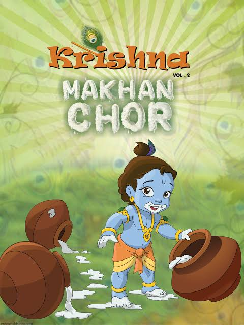
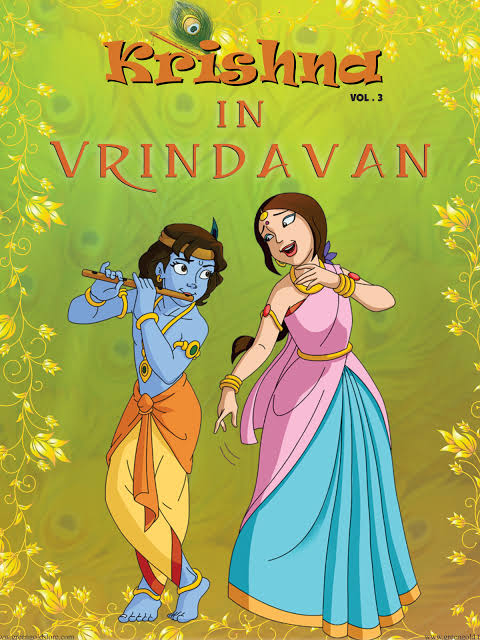
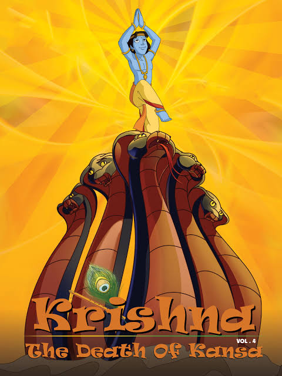

| Created by | - Rajiv Chilaka |
| Developed by | - Green Gold Animations |
| Directed by | - Rajiv Chilaka |
| Written By | - Raj Viwanandha |
| Owner | - Green Gold |
| Telecasting In | - Pogo |
| Total Episodes | - 663 |
| Available Lanuage | - Hindi |
| - Tamil | |
| - Telugu | |
| - English | |
| Running Time | - 13 minutes |
| Country of origin | - India |
Krishna and Balram is of the best cartoons which I have ever saw.Krishna is the Avatar of Lord Vishnu to kill Kamsha.In this most of the Asurs and devas having problem.Krishna and Balram where trying to kill the asurs and help to devas whichwe can see in the series.And some movies also available in this segment
My Rating
How bad?
This Movie Shows the birth of Krishna.Khamshar is the king of Madhura.He needs to be great in the total universe.So he travelled to many places and captured the Asurs.With the help of Asurs he Make a war against the Devars.The devas feinted in the war.The Indhra deva gained the help of Lord Vishnu.Lord Vishu said I will make a Avatar and kill Khamsha.
Khamasha had a sister.He arranged the marriage of his sister Vasuki and his best friend.After the the marriage a light caused in the sky.Some voice said The 8th son of the vasuki will Khamasha. In the fear Khamasha prisoned the couples.Khamasha killed the first 7 babies of the couples.Before the birth of the 8th son Lord Vishu appeared to them and said I will be your 8th son.Hand over him to the Nandhamaharajand Yasodha in Gokulam.They will hand over thier child to you.They accepted that.
Now the 8th is alive.He is our Lord Krishna.His father hand over him to Nadhamaharaj.
My Rating
How bad?
Now Krishna sucessfully become the son of Yasodha.But the real daughter of Yasodha had been killed by Khamasha.The soul of baby told "you will be killed soon".In fear Khamasha ordered his Asurs to kill the Babies in Gokulam(one of his ministry).Krishna is damn cut.He his famous in Gokulam.The Asurs targetted Krishna.But Krishna is god.He killed most of Khamashas Asurs in Childhood.Krishna did many this that irritated the those who make butter
Now Krishna is teenage.He made many misachievous things.One day stole the dress of some womens those who take bath in River Yamuna.But Krishna did that for fun.But the womens makes complain about Krishna .His mother tie him in a olden mixer(urlai kal).Krishna moved from there with that.He went to forest.He saw Radha first time there and he asked help to untie him.But they didn't help.
Krishna got stuck between two trees which are closer.With his power he broke the tree.It that time two devas came from that tree and said thanks for removing us from the curse.
My Rating
How bad?
Krishna blessed the Devas..One Night Gokulam got a attack of wild animals.They understand we don't have safety here,where Khamasaha is king but he did not take care of his nation.The people in Gokulam migrate to the Virndhavan.There Krishna had love with Radha.
In instance Krishna's family stayed in Radha's house.In that time some poojas for Indra deva happened.Krishna said our Govardhan Mountain is our god.So make pooja for that.People agreed that and make pooja for mountain.Indra deva got angry and raised tge tempest on Virndhavan.Krishna hold the mountain in one littl finger and saved the whole village
Indra asked to forgive him.Krishna also forgave him.Whole village thanked to Krishna.Many Asurd came to attack krishna on that time.But Krishna managed all.His father Nandhamaharaj told all the truth of khamsha.Krishna went to Madhura with Balram.
My Rating
How bad?
Krishna went to Madura and challanged khamasa.Krishna Killed Kamsha